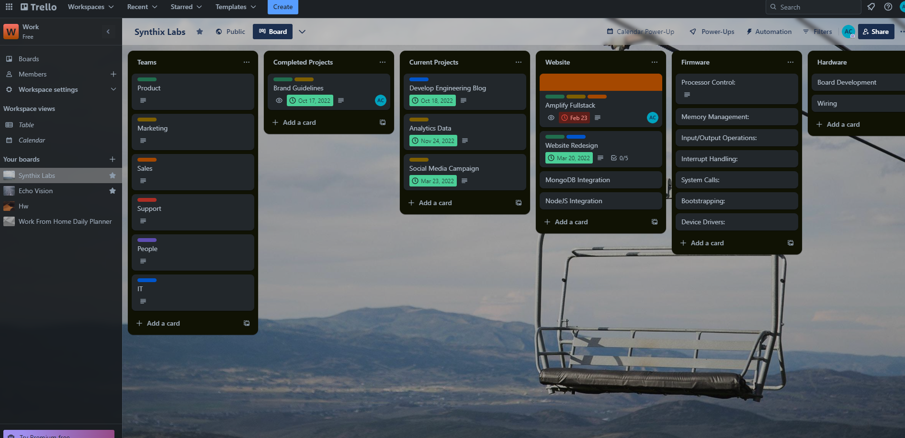
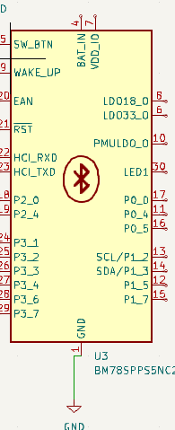
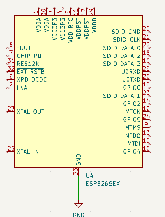

Checklist
My research and What i Learned
Organizational in kicad which enables me to put all my schematics in a projects with encapsulation of all the components and their respective footprints
developed a strategic thinking wiring technique that allows me to group the functions either in three traces of less or if there are more traces then i use a wire bus
because they dont need pinpoint precision, if the function only has a single object attached to it i use a trace so i can have control over that signal.
Looking back to the organization, while in PCB mode in kicad i can use all of the schematics to arrange a final board in order to complete the motherboard.
learning a bit of the rats nest which allows you to see the connections between the components and the traces, this would allow me to work easier and not worry about
wiring issues and deconstructiveness because the pcb automatically moves it for me. making this less time dependancy and i can work more on the design of the board.
found a suitable RISC-V Cpu for the motherboard, i have learned that a single cpu has multiple schematics and complex wiring.

Working on a trello in order for me to complete what is needed as fast as possible and to keep on schedule, this will ultimately help me to
not procrasinate and to finally keep on schedule
1. Component and CPU Choice
This type of chipset for bluetooth allows for low energy bluetooth for applications such as keyboards, monitoring devices that are not filled with heavy bits of data,
Classical bluetooth allows for data, video, and music streaming where getting the least possible loss from these sources is crucial.

1.1 Wiring of components
My technique is wiring crucial signals to a single trace, while four or more of the same dataset will be used bus and three or less will be wire entry to bus and
wiring that to bus.
Legend:
Blue wires are databus
Single green wire pointed at angle are Wire Entry to Bus
long green wires are single traces
1.2 Specifications and Usage of Numeration
Hello
